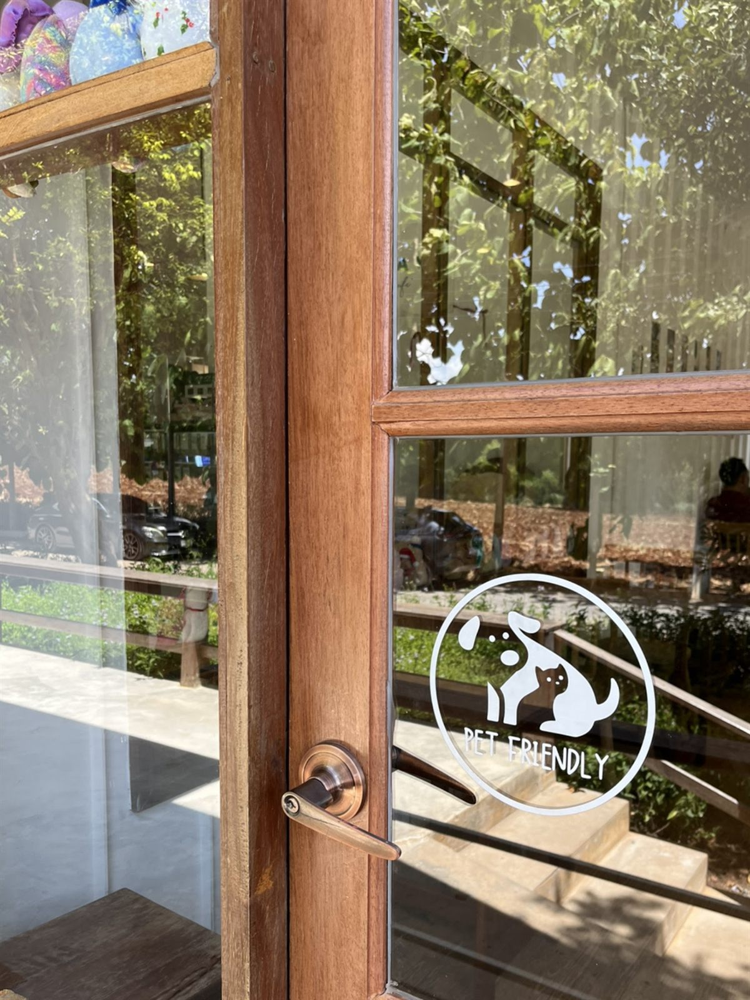
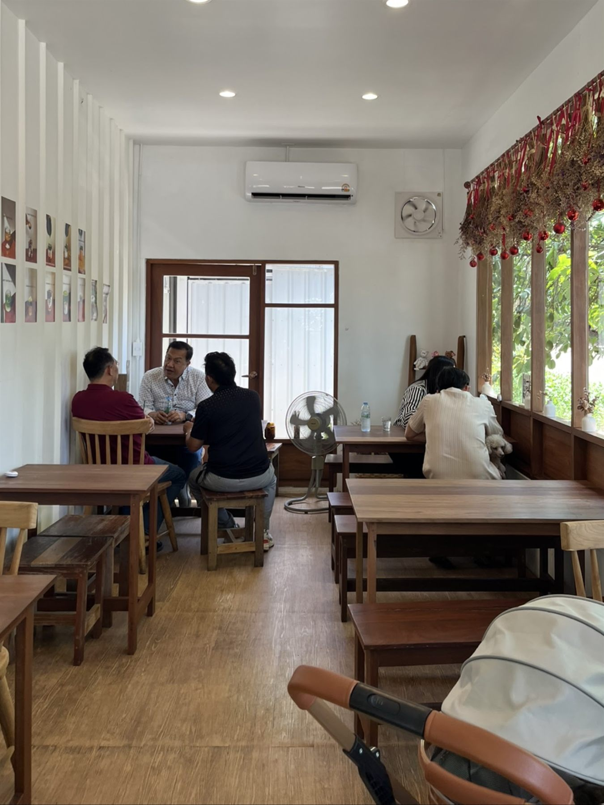
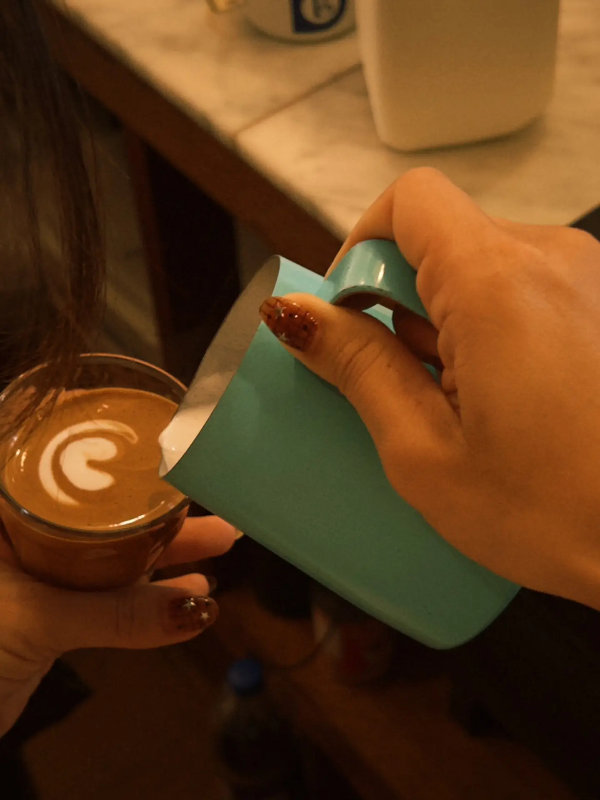
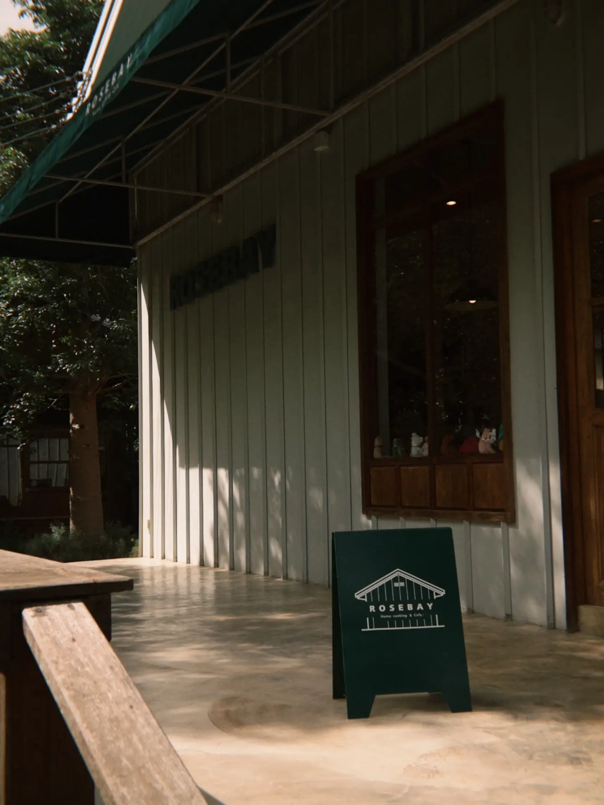

Find your way home.
Rosebay is down a small soi. Guests say plainly that you can get lost without a map — so set it before you drive.
- Address
- 339 Moo 11, Nong Nam DaengPak Chong, Nakhon Ratchasima 30130
- The turn
- Thanarat Road, KA. 4 — the soi opposite Ban Na SchoolTurn back in front of the mountains — the restaurant's own wording
- Coordinates
- 14.63048, 101.40451Plus code JCJ3+5R Nong Nam Daeng
- Hours
- Every day, 09:00 – 18:00The kitchen winds down before closing. If you are arriving late in the afternoon, call ahead.
- Phone
- 064-361-4569
- Parking
- There is a forecourt in front of the building.
- Booking
- We have not found a booking system. Call the restaurant, especially for a larger group.

Bring them along.
Pets are welcome. There is a dedicated outdoor zone with fans and shade — guests report it consistently, and there is a pet friendly decal on the door itself.
Rosebay has not published rules on size, leads, carriers or indoor seating, so we are not going to write them on their behalf. Please ask the team when you arrive.
Mornings are quieter.
The doors open at nine, and the middle of the day is the busiest stretch. If you want an easy table, come before noon.
Everything is cooked to order, one plate at a time, so at the peak there is a wait.


